Method
- covariance
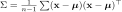
over the pixels; - eigen-decomposition
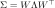
,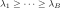
; - components :
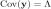
diagonal; - keep the first
 with
with 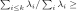
e.g. 99%.
Derivation
Maximise the variance of a projection
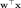
,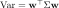
, with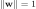
. The Lagrangian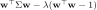
gives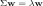
: the optimum is the eigenvector of the largest eigenvalue, and the variance equals . Repeating orthogonally to the previous directions gives the other components.
. Repeating orthogonally to the previous directions gives the other components.
Example
X = cube.reshape(B, -1).T.astype(float) # pixels x bands
Xc = X - X.mean(0)
lam, W = np.linalg.eigh(np.cov(Xc.T)); order = lam.argsort()[::-1]
lam, W = lam[order], W[:, order]
pcs = (Xc @ W).T.reshape(B, rows, cols)
print(np.cumsum(lam) / lam.sum()) # e.g. 0.91, 0.98, 0.995, ...For a 6-band image PC1 is roughly overall brightness, PC2 the contrast between visible and NIR (vegetation), later components noise and striping.
Picture
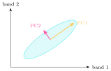
Correlated bands form an elongated cloud; PC1 runs along it, PC2 across.
Intuition
Turn the axes of the feature space until they line up with the shape of the data cloud: then each new axis says something the others do not.
Pitfall
PCA ranks by variance, not by class separability: a small but discriminant signal (a rare crop, a subtle change) may sit in a low-variance component that gets discarded.